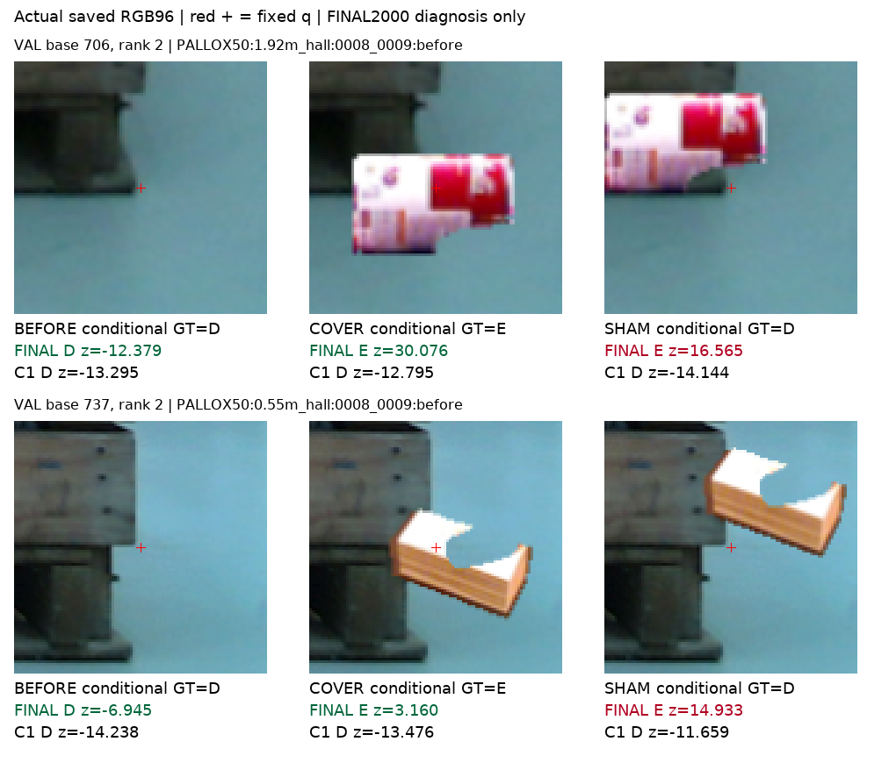
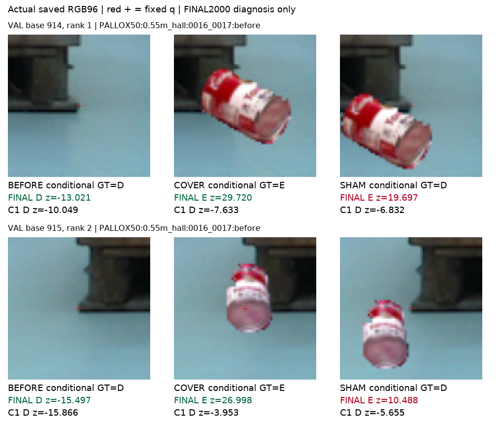
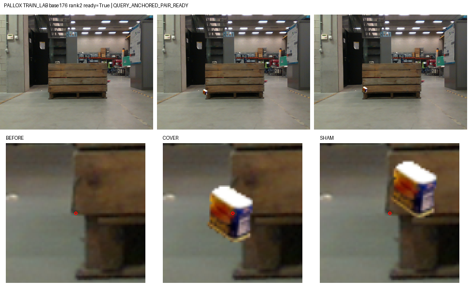
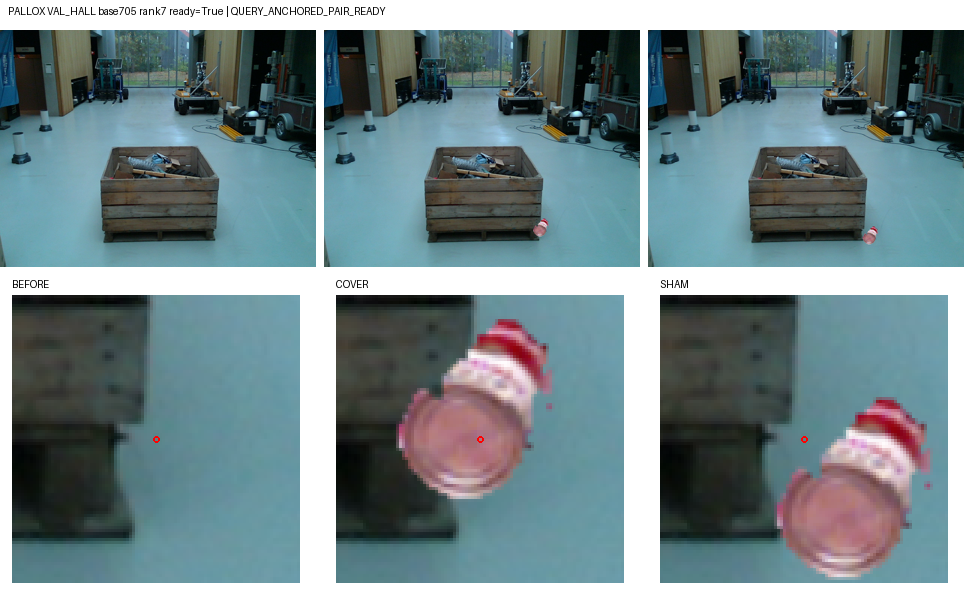
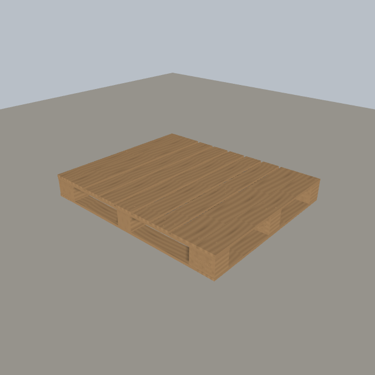

소스 기준 미통과: C3는 학습 전 step 0이 선택됐습니다.
7개 기준 중3개만 통과했습니다. 학습 후20개 저장 후보는 모두 초기 BCE ln(2)보다 나빴습니다. 목표는 진행 중이며, 현재223장에 C3를 실행하지 않았습니다.
| 원본 query | D / E / U | 전체 occurrence | known D / E / U | 원 q/L | 현재223 신규 |
|---|---|---|---|---|---|
| 960 | 61 / 4 / 895 | 31,680 | 255 / 198 / 31,227 | 그대로 | 0 |
기존960개 query의 좌표·L·논리 슬롯·선택 candidate·분할을 유지했습니다. query 중앙 네 bilinear 샘플의 native footprint 전체가 한 보임/가림 단서의 인증 범위에 들어가는 경우만 조건부 보조 라벨을 부여했습니다. 원본은 D61·E4·U895입니다. 원 native8 정답이나 사람 D/E/S gold는 아닙니다.
원본 D61개마다 미리 배정한16개 donor로976번 시도해194개 rank 쌍이 성립했습니다(학습75, 검증119). 원본·가림·단서 보존 대조의31,680행을 모두 보존했고 실패 after는 U로 남겼습니다. 성공쌍은 모두 Pallox이며 LOCO의96번 시도는0쌍입니다. LOCO controlled E 일반화는 미검증입니다.
| 원 source / split | 시도 rank 수 | 성립 rank 쌍 |
|---|---|---|
| LOCO|TRAIN | 48 | 0 |
| LOCO|VALIDATION | 48 | 0 |
| PALLOX|TRAIN_LAB | 400 | 75 |
| PALLOX|VAL_HALL | 480 | 119 |
194개 rank 쌍은 서로 독립인194장면이 아닙니다. 성공한 원 query는 학습10개·검증18개이고, 그 위에 여러 donor를 붙였습니다. donor는 학습 odd object/scene0–7, 검증 even object/scene8–9로 분리했지만 대상 Pallox 물리 bin은 공유합니다.
388개 변경 full RGB에는 원래 q/L에서 P3ROI와 RGB96을 새로 추출했습니다. 같은 full RGB인31,292행은 기존 세 입력의 정확한 참조를 재사용했습니다. 저장 입력 단위는1,348개이며, 이 중960개가 원본입니다. 원본 RGB와 edited RGB의 특징을 섞지 않았고 GT·단서 좌표·마스크·donor·분할 정보는 모델 forward에 전달하지 않았습니다.
C1은 V94에서 고정된 step100을 그대로 읽은 진단 기준선입니다. C1이 학습한 이전 known-set 라벨과 이번 query-anchored 라벨은 다르므로, 같은 새 소스 위의 비교가 단일 요인 ablation을 뜻하지는 않습니다. C3는 동일26,573파라미터 모델을 seed194로 새로 초기화해2,000회 학습했습니다(19.01초). 배치64는 LOCO 원본D8·Pallox 원본D8·대조D16·자연E8·제어가림E24입니다. 소스 검증 다섯 계층 BCE의 같은 가중 평균으로만 체크포인트를 골랐습니다.
선택 step0은 마지막 출력층이0이어서 유효 입력의 raw logit이 모두0입니다. 고정 규칙 D iff z<0, E iff z≥0에 따라 모두 E가 됩니다. 아래 E recall100%는 학습한 가림 인식 성공이 아닙니다. 좌표 연결로 구성 자료는 늘었지만 C3의 소스 일반화는 확보하지 못했습니다.
| 계층 | C1 정답/N | C1 recall | C1 U | C1 BCE | C3 정답/N | C3 recall | C3 U | C3 BCE |
|---|---|---|---|---|---|---|---|---|
| LOCO 원본 D | 1/3 | 33.3% | 0 | 7.4029 | 0/3 | 0.0% | 0 | 0.6931 |
| Pallox 원본 D | 25/25 | 100.0% | 0 | 0.0000 | 0/25 | 0.0% | 0 | 0.6931 |
| 단서 보존 대조 D | 75/75 | 100.0% | 0 | 0.0046 | 0/75 | 0.0% | 0 | 0.6931 |
| 자연 원본 E | 2/2 | 100.0% | 0 | 0.0000 | 2/2 | 100.0% | 0 | 0.6931 |
| 제어 가림 E | 0/75 | 0.0% | 0 | 12.2118 | 75/75 | 100.0% | 0 | 0.6931 |
| 계층 | C1 정답/N | C1 recall | C1 U | C1 BCE | C3 정답/N | C3 recall | C3 U | C3 BCE |
|---|---|---|---|---|---|---|---|---|
| LOCO 원본 D | 2/3 | 66.7% | 0 | 0.6791 | 0/3 | 0.0% | 0 | 0.6931 |
| Pallox 원본 D | 30/30 | 100.0% | 0 | 0.0013 | 0/30 | 0.0% | 0 | 0.6931 |
| 단서 보존 대조 D | 115/119 | 96.6% | 0 | 0.3005 | 0/119 | 0.0% | 0 | 0.6931 |
| 자연 원본 E | 2/2 | 100.0% | 0 | 0.0000 | 2/2 | 100.0% | 0 | 0.6931 |
| 제어 가림 E | 2/119 | 1.7% | 0 | 10.4678 | 119/119 | 100.0% | 0 | 0.6931 |
D/E는 query에 연결된 조건부 AUX의 보임/가림입니다. U는 입력/연산 지원이 없어 보류한 예측이며 recall 분모에 포함합니다. GT가 U인31,227행은 가림 정답으로 쓰지 않습니다. BCE는 각 계층 평균이며, unavailable은 selector에서 safe0 BCE=ln2로 계산합니다. 자연E는 TRAIN2·VAL2뿐입니다.
행 [D,E], 열 [D,E,U]. P/R는 이 소스의 known 라벨과 반복 donor occurrence에 조건부입니다.
| 분할 | 모델 | known N | CM | D P | D R | E P | E R | U율 |
|---|---|---|---|---|---|---|---|---|
| TRAIN | C1 | 180 | [[101, 2, 0], [75, 2, 0]] | 57.4% | 98.1% | 50.0% | 2.6% | 0.0% |
| TRAIN | C3 선택0 | 180 | [[0, 103, 0], [0, 77, 0]] | — | 0.0% | 42.8% | 100.0% | 0.0% |
| VALIDATION | C1 | 273 | [[147, 5, 0], [117, 4, 0]] | 55.7% | 96.7% | 44.4% | 3.3% | 0.0% |
| VALIDATION | C3 선택0 | 273 | [[0, 152, 0], [0, 121, 0]] | — | 0.0% | 44.3% | 100.0% | 0.0% |
| 분할 | 모델 | 모두 정답 / rank 쌍 | 비율 | 대상 범위 |
|---|---|---|---|---|
| TRAIN | C1 | 0/75 | 0.0% | Pallox만 / LOCO 미검증 |
| TRAIN | C3 선택0 | 0/75 | 0.0% | Pallox만 / LOCO 미검증 |
| VALIDATION | C1 | 2/119 | 1.7% | Pallox만 / LOCO 미검증 |
| VALIDATION | C3 선택0 | 0/119 | 0.0% | Pallox만 / LOCO 미검증 |
| 기준 | 실제 | 요구 | 판정 |
|---|---|---|---|
| LOCO 원본 D recall | 0.0% | ≥85.0% | 미통과 |
| Pallox 원본 D recall | 0.0% | ≥85.0% | 미통과 |
| 자연 원본 E recall | 100.0% | ≥75.0% | 통과 |
| 단서 보존 대조 D recall | 0.0% | ≥85.0% | 미통과 |
| 제어 가림 E recall | 100.0% | ≥75.0% | 통과 |
| VAL 세 장 모두 정답 | 0.0% | ≥75.0% | 미통과 |
| VAL known 보류율 | 0.0% | ≤5.0% | 통과 |
마지막 상태 하나를 동일 공개 소스에서만 읽은 진단입니다. 선택 step 0을 바꾸거나 새 모델을 고르지 않습니다.
| 분할 | 혼동행렬 | LOCO D | Pallox D | 자연 E | 대조 D | 가림 E | 세 장 정답 |
|---|---|---|---|---|---|---|---|
| TRAIN | [[103, 0, 0], [0, 77, 0]] | 100.0% | 100.0% | 100.0% | 100.0% | 100.0% | 75/75 |
| VALIDATION | [[70, 82, 0], [8, 113, 0]] | 66.7% | 63.3% | 100.0% | 41.2% | 93.3% | 23/119 |
학습 쌍은75/75, 검증은23/119입니다. 검증 가림 E는111/119인데 단서 보존 대조 D는49/119입니다. 자연 E는2/2뿐입니다. 다섯 계층 BCE 4.147949는 원래 step2000 history와 정확히 일치합니다. 이 차이는 자료별 과적합이나 편법 단서 사용 가능성을 제기하지만, 원인을 증명하지는 않습니다.
고정 마지막 step2000에서 원본 D·가림 E·대조 E가 나온 첫 4개 distinct VAL base와 그 첫 rank를 저장 점수로 고른 사후 진단입니다. 원래 q/L 및 실제 모델 RGB96을 그대로 표시했고 새 좌표·정답 crop을 찾지 않았습니다. 기대 대조 라벨은 조건부 AUX D입니다.
실제 접촉표 검토기록에서는 SHAM에서도 query 인근 구조 모서리 단서가 남아 있는데 가림 E가 출력되었습니다. 일부 query 중앙은 인접 바닥이므로 중심 픽셀 재질을 정답으로 삼지는 않습니다. 주변 물체 존재나 합성 흔적에 대한 지름길 사용 및 과적합과 양립하는 관찰이지만, 단독 원인 증명은 아닙니다. 새 모델·문턱·학습 행 선택에 사용하지 않았습니다.


고정 사례1 · 실패 U · 고정 사례2 · 실패 U · 고정 사례3 · 실패 U · 고정 사례4 · 성립 · 고정 사례5 · 실패 U · 고정 사례6 · 성립
성립한 TRAIN/VAL의 고정 첫 사례를 아래에 보입니다. 앞선 미성립 사례도 위 링크에 그대로 남겼습니다. pasted 물체는 제어 증강이며 자연 가림 gold가 아닙니다. 다른 목재가 보여도 지정한 단서의 보임과는 다를 수 있습니다.


기존 USD의308개 mesh·110,478개 triangle을 기존 Linux NVIDIA EGL로 렌더했습니다. 숫자형 material factor의 정규화 오류로 어두웠던 V1/V2는 보존하고, float factor를 명시한 V3에서 목재색과 grain이 보이는 실제 RGB를 만들었습니다. part ID는 RGB에 넣지 않고 별도 기하 ownership에 저장했습니다.

하나의 규칙적 texture·camera·light 예시입니다. authored MDL 복원이나 재질 identity, photorealism, sim2real 효과, native association을 검증한 것이 아닙니다. part152 alone4640px / visible4589px는 별도 보조 기하 출력입니다. GPU ID 색상 오류32px는 U로 남겼습니다.
독립 저장 감사 두 건은 모두 PASS입니다. 선택 결과 검산 · 고정 마지막 상태 검산입니다. 이 PASS는 입력·점수·분모·선택 절차의 재현 검산이며, 의미 라벨의 gold 정당성이나 과학적 일반화 검증을 뜻하지 않습니다.
현재 평가의 최신 실행은 V94 C1 보고서입니다. 이번 V96은 private 현재 영상·GT·점수를 읽거나 checkpoint/threshold 선택에 사용하지 않았고, 새 current 추론·PnP도0입니다. 자기 가림 원인을 학습하거나 D/E/S 전체 목표를 해결했다고 주장하지 않습니다.
정량 JSON · C3 선택 결과 · 고정 C1 기준선 · 실제 이미지 구성 봉인 · 특징 입력 봉인 · 별도 렌더 근거